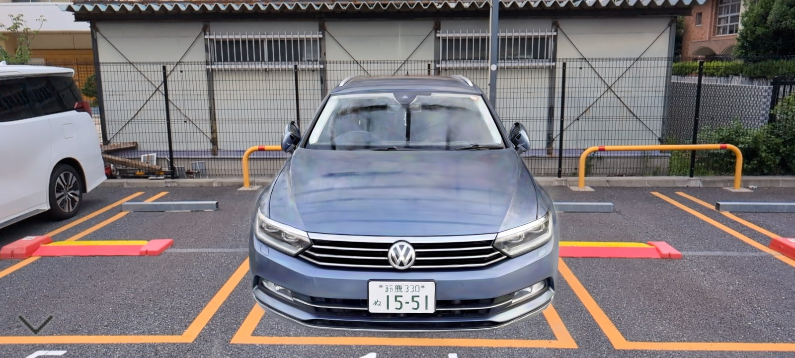
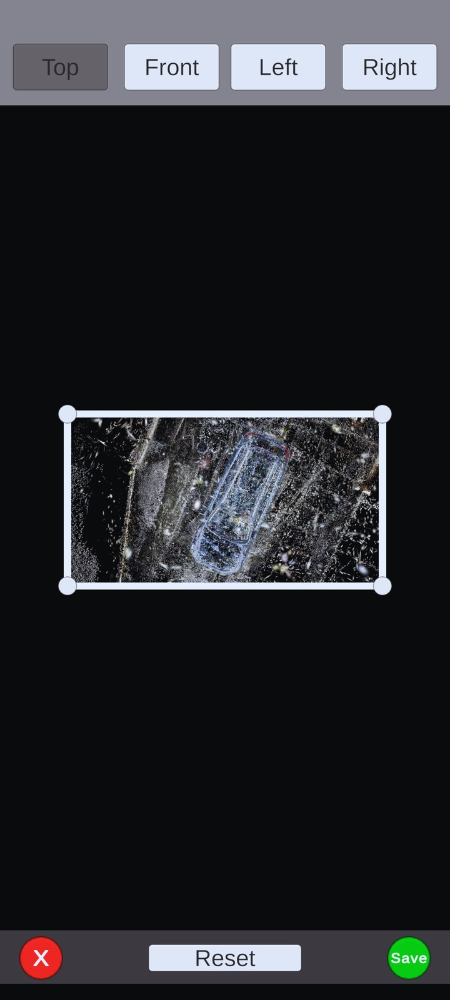

02 — Engagesoft Internship / R&D
動画から生成した3DGSデータをXR空間にインタラクティブ配置するアプリ
Overview
スマートフォン等で撮影した動画から3DGS（3D Gaussian Splatting）データを生成し、 アプリ上で必要なオブジェクト（車など）の範囲を指定して切り取り、XR空間に配置・表示するアプリケーション。
自動車関連事業における活用を見据え、背景などの不要なデータを取り除いて 対象オブジェクトだけをインタラクティブに動かしたり配置したりできるシステムの検証・開発を行った。 3DGSはNeRF系の手法と比較して高速なレンダリングが可能な点が特長であり、リアルタイムのXR体験への組み込みに向けた可能性を探った。
Gallery


Media
My Role
Tech Stack